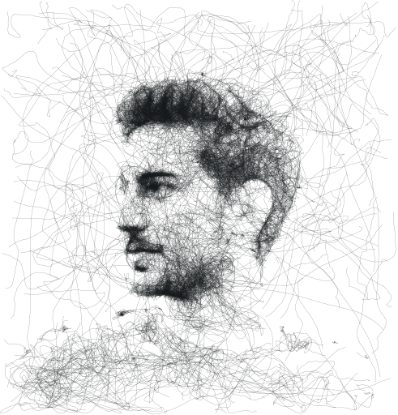

I come to the field of product creation with a background in cognitive and computer sciences. It enables me to speak the language of engineers, and gives me deep insights into user’s needs.
Work
Here are some of my personal and professional projects. It is still under construction, but don't worry, project pages will come soon.
Pop-in
chatbot
website
start-up
Life Calendar
data visualisation
personal
SurfBuddy
code
tool
personal
UI
UX
UI
Who
My name is Vincent. I am a lifelong learner, dedicated in making the product and services that surround us more human-centered.
As a T-shaped profile, my curiosity makes me want to learn about every subject, and by experience, I know on what to focus my energy to make the best out of a project. Designing the things that surround us, I value design that has a positive impact on society.
Besides, I enjoy moving my body by running, swimming or climbing! (oh, and I love puzzles, there is even one right here on my website, starting with a famous konami cheat code.)

What
now 2020
UX Designer
Société Générale
Started this apprenticeship in September 2020. From Design system to high fidelity prototypes on financial services.
2020 2019
Brand Content Manager
Pop-in
Using the lean start-up method, Élodie, Marie and I tried to answer one of the biggest parent's problem. Read the full story here: Pop-in Case Study
Where
Always curious, always learning.
2021 2020
UX Design
École Multimédia
Following a one year program to learn UX: Psychology, user research, UI design, and more...
2020 2019
Developer
42
I spent one year at 42 (Paris), a school without teachers: I learned computer science by solo and team projects, and also participated throughout the year in Artificial Intelligence Workshops organised by 42AI Association. (C, Python)
2019 2017
Master in Psychology and Neurosciences of Movement
Université Paris Nanterre
After 3 years studying Psychology, I went to Paris to learn how intelligent systems and cognitive processes are shaped by aspects of the entire body of an organism. I also discovered the exciting world of scientific research, and wrote a dissertation on how sensory integrations allow the emergence of a body consciousness.